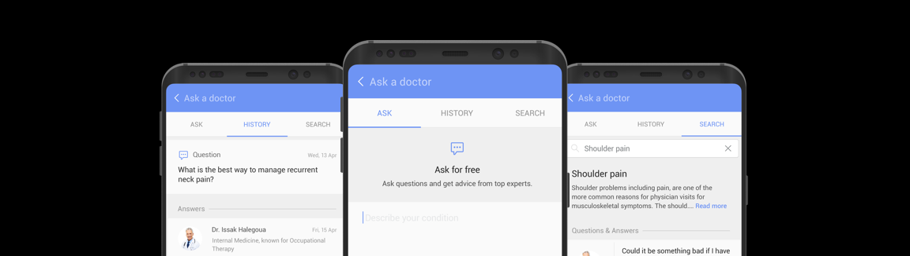

Ask a Doctor
Summary
Aim
The market for telemedicine services are growing at a very rapid pace. To keep up with the changing landscape, Samsung Health wanted to present it's users with the ability to access telemedicine services directly from its consumer health product.
Solution
Ask a doctor was proposed as a possible solution that integrated the telemedicne services directly into Samsung health using exsisting patterns and norms. The product was eventually shipped under another name "Ask an Expert" along with the launch of Samsung Galaxy S8.
Role
Product Designer | Design Technologist
January 2016 - June 2016
The Journey
Research
In order to understand the problems that users face when it comes to the telemedicine industry, the team performed various forms of research like desk research, competetitve evaluation and also talking to users. The following points emerged as the major pain points for the telemedicine industry as whole:
- Users love the convinence of having the medical advise of a doctor just a phone call away.
- Working with user's exsisting insurance plan is a big factor for adaption.
- Users do not trust the medical advise from telemedicine services when it comes to chronic diseases.
Iterative design
Following the research phase, the design team performed multiple brainstorming sessions in order to come up with an inital design for the service. The initial design for the service acted like a forum where the users could post a free question to the network of doctors and they could get a response back soon.
The design was fleshed out into wireframes that were then again put through user testing and validation. The testing proved the model of interactiont that the team had thought about and then we moved to refine and polish the design.
Prototype
During the design process I had created a lot of prototypes of varying fidelities. The concept was tested with users using these prototypes and then the final prototype (seen below) was done completely in android. The android prototype was optimized for the Samsung Note 5.
Final Product
Ask a doctor was finally released under a different name "Ask an Expert" in the global market along with Samsung health v5.6. The feature was re-released in the US market recently with the launch of the samsung galaxy s8